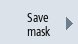

You have the option of saving the configurations of the variables made in the "NC/PLC variables" window in a screen form that you reload again when required.
Editing screen forms
If you change a screen form that has been loaded, then this is marked using with * after the screen form name.
The name of a screen form is kept in the display after switching-off.
Procedure
| | 1. | You have entered values for the desired variables in the "NC/PLC variables" window. |
| | 2. | Press the ">>" softkey.
|
|  | 3. | Press the "Save screen" softkey. The "Save screen: Select archiving" window opens. |
 | 4. | Position the cursor on the template folder for variable screen forms in which your actual screen form should be saved and press the "OK" softkey. The "Save screen: Name" window opens. |
| | 5. | Enter the name for the file and press the "OK" softkey. A message in the status line informs you that the screen form was saved in the specified folder. If a file with the same name already exists, they you will receive a prompt. |
| | 6. | Press the "Load screen" softkey. The "Load screen" window opens and displays the sample folder for the variable screen forms. |
| | 7. | Select the desired file and press the "OK" softkey. You return to the variable view. The list of all of the predefined NC and PLC variables is displayed. |